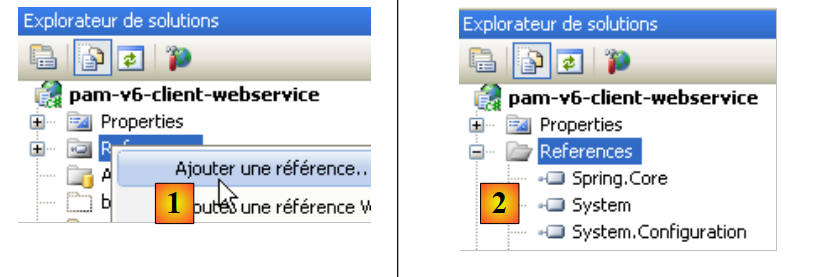
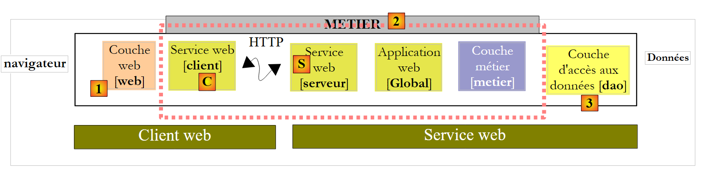
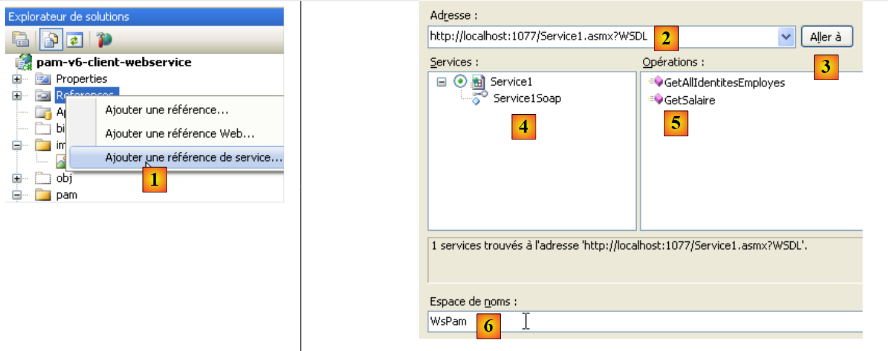
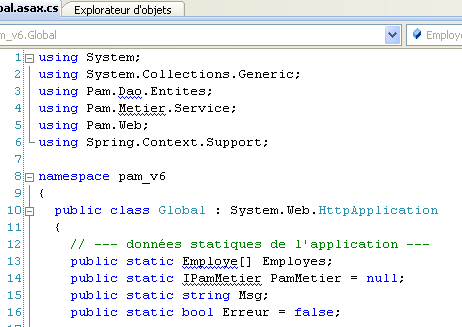

10. A aplicação [SimuPaie] – versão 6 – um cliente ASP.NET de um serviço web
10.1. A arquitetura da aplicação
Estamos a desenvolver a arquitetura cliente/servidor do teste NUnit da seguinte forma:
 |
Em [1], o teste NUnit é substituído pela aplicação web da versão 8. É importante notar aqui que esta arquitetura inclui dois servidores web não mostrados:
- um servidor web que executa o serviço web [S]. Este será executado numa primeira instância do Visual Web Developer.
- um servidor web que executa o cliente web [1]. Este será executado numa segunda instância do Visual Web Developer.
10.2. O projeto do Visual Web Developer para o cliente [web]
Criamos um novo projeto Web ASP.NET:
 |
- em [1], selecionamos um projeto Web em C#
- Em [2], selecionamos «Aplicação Web ASP.NET»
- em [3], nomeamos o projeto web
- em [4], especificamos um local para este projeto
- em [5], o projeto é criado
Modificamos algumas propriedades do projeto:
 |
- em [1], o nome do assembly que será gerado
- Em [2], o namespace padrão para as classes e interfaces que serão criadas
Para compilar o projeto [pam-v6-client-webservice], podemos recuperar os ficheiros [Global.asax] e [Default.aspx] do projeto web [pam-v4-3tier-nhibernate-multivues-monopage] e copiá-los para o projeto [pam-v6-client-webservice]. Fazemos isto utilizando primeiro o Explorador do Windows:
 |
- em [1], a pasta do projeto [pam-v4-3tier-nhibernate-multivues-monopage]
- em [2], a pasta do projeto [pam-v6-client-webservice] após a cópia
- as pastas [images, pam, resources]
- os ficheiros [Global.asax, Global.asax.cs]
- os ficheiros [Default.aspx, Default.aspx.cs, Default.aspx.designer.cs]
- em [3], no Visual Studio Express, exiba todos os ficheiros do projeto para mostrar os ficheiros recém-adicionados
- Em [4], inclua as pastas e os ficheiros adicionados no projeto
 |
- em [5], o novo projeto [pam-v6-client-webservice]
Nesta altura, pode compilar o projeto pela primeira vez [6]. Irá obter os seguintes erros:
Para compreender e corrigir estes erros, precisamos de analisar a arquitetura do projeto web em desenvolvimento:
 |
O projeto [pam-v6-client-webservice] é a camada [web] [1] no diagrama acima. Podemos ver que esta camada comunica com o cliente do serviço web [C], um cliente que iremos gerar em breve.
- Os erros 2, 5 e 7 resultam do facto de o código em [pam-v4] fazer referência à DLL da camada [business], uma DLL que agora se encontra no lado do servidor em vez de no lado do cliente.
- Os erros 1 e 3 têm a mesma causa, mas desta vez em relação à DLL da camada [DAO].
- O erro 4 é causado pelo facto de o código em [Global.asax] utilizar o Spring, e o nosso projeto não fazer referência à DLL do Spring. Iremos adicionar esta referência.
- O erro 6 é causado pelo facto de a classe [Employee] estar definida na camada [DAO], que não existe no lado do cliente.
Os erros de namespace 1, 2, 4, 5, 6 e 7 serão resolvidos através da geração do cliente C para o serviço web. O erro 3 é resolvido adicionando uma referência à DLL do Spring no projeto. Podemos proceder da seguinte forma:
 |
- Em [1], adicione uma referência ao projeto [pam-v6-client-webservice]
- Em [4], adicionámos uma referência à DLL [Spring.Core] na pasta [lib].
Após adicionar esta referência ao Spring, a geração do projeto apresenta menos um erro. Todos os outros erros devem-se a linhas de código que fazem referência a objetos das camadas [business] e [DAO], que agora se encontram no servidor. Veremos que estes objetos em falta serão gerados no cliente do serviço web [C].
 |
Antes de gerar o cliente do serviço web [C], iremos alterar o namespace das várias classes presentes. Atualmente, elas encontram-se no namespace [pam-v4]. Alteramos este namespace para [pam-v6]. Os ficheiros envolvidos são os seguintes: Default.aspx.cs, Default.aspx.designer.cs, Global.asax.cs. Por exemplo:
....
namespace pam_v6
{
public class Global : System.Web.HttpApplication
{
// --- static application data ---
public static Employe[] Employes;
public static IPamMetier PamMetier = null;
....
Linha 2: O namespace pam_v4 foi substituído pelo namespace pam_v6.
Além disso, deve modificar a marcação nos seguintes ficheiros: Default.aspx e Global.asax:
 |
A marcação para [Default.aspx] passa a ser:
<%@ Page Language="C#" AutoEventWireup="true" CodeFile="Default.aspx.cs" Inherits="pam_v6.PagePam" %>
<!DOCTYPE html PUBLIC "-//W3C//DTD XHTML 1.0 Transitional//EN" "http://www.w3.org/TR/xhtml1/DTD/xhtml1-transitional.dtd">
.....
Linha 1: O atributo Inherits especifica o nome da classe do ficheiro [Default.aspx.cs]. Alteramos o namespace.
A marcação para [Global.asax] passa a ser:
<%@ Application Codebehind="Global.asax.cs" Inherits="pam_v6.Global" Language="C#" %>
Acima, alteramos o namespace do atributo Inherits.
Agora geramos o cliente do serviço web [C].
 |
Para executar os passos seguintes, o serviço web [S] [pam-v5-webservice] deve estar a ser executado noutra instância do Visual Web Developer.
 |
- Em [1], adicionamos uma referência ao serviço web [pam-v5-webservice] ao projeto [pam-v6-client-webservice]
- Em [2], introduza o URI do serviço web [pam-v5-webservice]. Esta é a URL do ficheiro WSDL para este serviço web. Ao criar o serviço web [pam-v5-webservice], indicámos como encontrar esta URL.
- Em [3], solicite ao assistente que utilize o ficheiro WSDL especificado em [2]
- em [4], o serviço web descoberto [Service1Soap] e em [5] os métodos remotos que este expõe.
- Em [6], definimos o namespace no qual as classes e interfaces do cliente [C] serão geradas
- Começamos a gerar o cliente [C]
 |
- Em [1], o cliente gerado. Clique duas vezes nele para aceder ao seu conteúdo.
- Em [2], no Object Explorer, são apresentadas as classes e interfaces do namespace pam_v6.WsPam. Este é o namespace do cliente gerado.
- [3] mostra a classe que implementa o cliente do serviço web.
- Em [4], os métodos implementados pelo cliente [Service1SoapClient]. Aqui encontramos os dois métodos do serviço web remoto [5] e [6].
- Em [2], são apresentados os diagramas de entidades para as camadas:
- [negócio] : Folha de Pagamento, Itens da Folha de Pagamento
- [DAO]: Colaborador, Contribuições, Subsídios
De agora em diante, tenha em mente que estas representações das entidades remotas estão localizadas no lado do cliente e no namespace pam_v6.WsPam.
Vamos examinar os métodos e propriedades expostos por uma delas:
 |
- Em [1], selecionamos a classe local [Employee]
- Em [2], vemos as propriedades da entidade remota [Employee], bem como os campos privados utilizados para as necessidades específicas da entidade local.
Vamos examinar o código em [Global.asax.cs] que contém erros:
 |
- As linhas 3 e 4 utilizam namespaces que existem no servidor, mas não no cliente.
- A linha 13 utiliza uma classe [Employee] para a qual o namespace correto não foi declarado
- A linha 14 utiliza uma interface IPamMetier que é desconhecida para o cliente.
Já nos deparámos com problemas semelhantes no cliente C# discutido anteriormente.
Na arquitetura:
 |
- a camada [de negócio] local é implementada pelo cliente [C] do tipo pam_v6.WsPam.Service1SoapClient, que não implementa a interface IPamMetier, apesar de possuir métodos com os mesmos nomes.
- As entidades tratadas (Employee, Benefits, Contributions) pelo cliente [C] gerado encontram-se no namespace pam_v6.WsPam
O código em [Global.asax.cs] altera-se da seguinte forma:
using System;
using System.Collections.Generic;
using Pam.Web;
using Spring.Context.Support;
using pam_v6.WsPam;
namespace pam_v6
{
public class Global : System.Web.HttpApplication
{
// --- static application data ---
public static Employe[] Employes;
public static Service1SoapClient PamMetier = null;
public static string Msg;
public static bool Erreur = false;
// application startup
public void Application_Start(object sender, EventArgs e)
{
// using the configuration file
try
{
// instantiation layer [metier]
PamMetier = ContextRegistry.GetContext().GetObject("pammetier") as Service1SoapClient;
// simplified list of employees
Employes = PamMetier.GetAllIdentitesEmployes();
// we succeeded
Msg = "Base chargée...";
}
catch (Exception ex)
{
// we note the error
Msg = string.Format("L'erreur suivante s'est produite lors de l'accès à la base de données : {0}", ex);
Erreur = true;
}
}
public void Session_Start(object sender, EventArgs e)
{
// put an empty simulation list in the session
List<Simulation> simulations = new List<Simulation>();
Session["simulations"] = simulations;
}
}
}
A linha 24 instancia a camada [C] utilizando o Spring. A configuração necessária para esta instanciação está definida em [web.config]:
<configSections>
<sectionGroup name="system.web.extensions" type="System.Web.Configuration.SystemWebExtensionsSectionGroup, System.Web.Extensions, Version=3.5.0.0, Culture=neutral, PublicKeyToken=31BF3856AD364E35">
...
</sectionGroup>
<sectionGroup name="spring">
<section name="context" type="Spring.Context.Support.ContextHandler, Spring.Core" />
<section name="objects" type="Spring.Context.Support.DefaultSectionHandler, Spring.Core" />
</sectionGroup>
</configSections>
<spring>
<context>
<resource uri="config://spring/objects" />
</context>
<objects xmlns="http://www.springframework.net">
<object id="pammetier" type="pam_v6.WsPam.Service1SoapClient,pam-v6-client-webservice"/>
</objects>
</spring>
Linha 16: A camada [business] é uma instância da classe [pam_v6.WsPam.Service1SoapClient], que se encontra na DLL [pam-v6-client-webservice]. Recorde-se que configurámos o projeto [pam-v6-client-webservice] para gerar esta DLL.
Ainda existem alguns erros em [Default.aspx.cs]:
 |  |
- linhas 5, 6: estes namespaces já não existem. As entidades encontram-se agora no namespace pam_v6 ou pam_v6.WsPam.
- linha 98: o cliente gerado [C] não herdou a classe [PamException] da camada [dao]. Não foi possível fazê-lo, uma vez que o serviço web não expõe esta exceção. Optamos por substituir PamException pela sua classe pai, Exception.
O código passa a ser:
...
using System.Web.UI.WebControls;
using pam_v6.WsPam;
namespace pam_v6
{
public partial class PagePam : Page
{
...
...
try
{
feuillesalaire = Global.PamMetier.GetSalaire(DropDownListEmployes.SelectedValue, HeuresTravaillées, JoursTravaillés);
}
catch (Exception ex)
{
...
Depois de corrigidos estes erros, podemos executar a aplicação web:
 |
- em [1], a URL do cliente web para o serviço web remoto
- em [2], a lista suspensa de funcionários foi preenchida. Os dados que contém provêm do serviço web.
Convidamos o leitor a testar esta versão 6, uma cópia da versão 4.